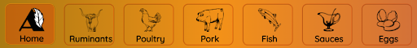
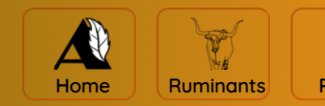
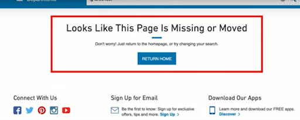

User Experience Research
Much of the work that I do as a researcher is protected by non-disclosure agreements. I conducted the entire UX research process on my own website, AutumnAllYear.us to demonstrate the elements in a way that is open and accessible to the public.
| The Client: | Process Overview: |
|---|---|
| AutumnAllYear.us | |
| The Ask: | |
|
Process Details:
Heuristic Evaluation
Using the Nielsen Normal Group's 10 Usability Heuristics for User Interface Design, several areas of strength and opportunities were revealed.
- 0 - No usability issue
- 1 - Cosmetic - Need only be fixed when extra time is available on project
- 2 - Minor - Should be fixed - low priority
- 3 - Major - Important to fix - high priority
- 4 - Catastrophic - Must be fixed before the site can go live (if live already, must be fixed immediately)
Category Rating Explanation Visibility of System Status 0 Visitors can easily determine how to return to the home page by clicking on the logo located at the top of the screen. The main navigation menu is visible from each page and this makes it easy for a site visitor to understand their location within the site.  Match Between System and Real World 0 The terminology utilized on the site is simple, plain English. No jargon or industry terms are used. Recipes are clearly explained and contain expanded notes as well as substitution and additions. The main site navigation is also easy to understand. Even the term “ruminant”, which some people may not be familiar with, features an image of a cow, helping to define the recipes a site visitor should expect to find in that section.  User Control and Freedom 0 Exits are clearly marked. The page logo is consistently located at the top of the page and the main navigation menu is consistently located at the top of the page on desktop and the expandable hamburger menu is consistently at the top on mobile Consistency and Standards 0 The visual layout of each recipe is consistent. Colors used, placement of elements, and calls to action are consistent throughout each recipe featured. Each page within the site (Ruminant, Poultry, Pork, etc) is consistent with the heading at the top, images of each food featuring that type of food, and a section to explore more. Every image and the name of the recipe is clickable. This is consistent across all pages contained internally within the site and is consistent with the experience site visitors will encounter on external sites. No learning is required to use the site. Error Prevention 2 Currently, there are no places where a site visitor is likely to encounter an error or make an inadvertent mistake. However, there should be a place for site visitors to submit questions or requests for recipes. And in that location, there should be a way to prevent inadvertent errors such as sending a message before the site visitor has finished composing the message. While there is nothing to resolve at this time, when a form is added to allow some site visitor feedback, error prevention should be added as well. Recognition Rather than Recall 0 Site visitors can rely on recognition rather than recall to perform all actions on the site. Photos and descriptions of recipes are clickable, a common feature on other sites. Navigation is located at the top of the page, another common feature on other sites. And the food is divided into categories, which is similar to how other recipe sites are structured. Flexibility and Efficiency of Use 0 Areas where site visitors must perform an action, such as clicking on (or tapping) an item to view the recipe, can be performed in more than one way. A site visitor can click (or tap) either the image or the title of the recipe and that action will take them to the recipe. Site visitors can elect to click on (or tap) the title, or may choose to utilize the slightly easier method of clicking on the image, which is much larger. Aesthetics and Minimalist Design 0 Aesthetically, the site is clean, simple, and minimalistic. There is signal (ingredients and instructions) located toward the top of a page and noise (links to other recipes) is located toward the bottom. There is also much more signal than noise, creating a high signal-to-noise ratio. Help Users Recognize, Diagnose, and Recover from Errors 2 While there were no errors found on the site, there is no way for site visitors to recognize, diagnose, or recover from an error should they encounter one. For example, if a recipe is ever removed, but some links referring to the recipe are inadvertently left on the site, a site visitor would only find themselves on an empty page displaying a system error. An internal (site) error explaining what happened and giving site visitors a way to recover should be implemented. Included below is an example of an error message found on Lowe’s site, as an example.  Help and Documentation 3 This site is missing an About section. An About section would be useful in explaining why all the recipes featured on the site make use of limited ingredients. It would also be beneficial to a site visitors’ knowledge and understanding of the intent of the site to explain who the author is and why they follow this very limited diet.
There are helpful videos and images featured on the recipe pages, which expand on what is contained within each recipe. Employing a similar tactic for explaining the intent of the overall site would be helpful in educating site visitors.
Additionally, there is no search option featured on the site. Adding a search option would give site visitors the ability to find what they are looking for easily. When adding this feature, ensure to add it in a location that is commonly found on external sites, such as at the top right or top center of the page.